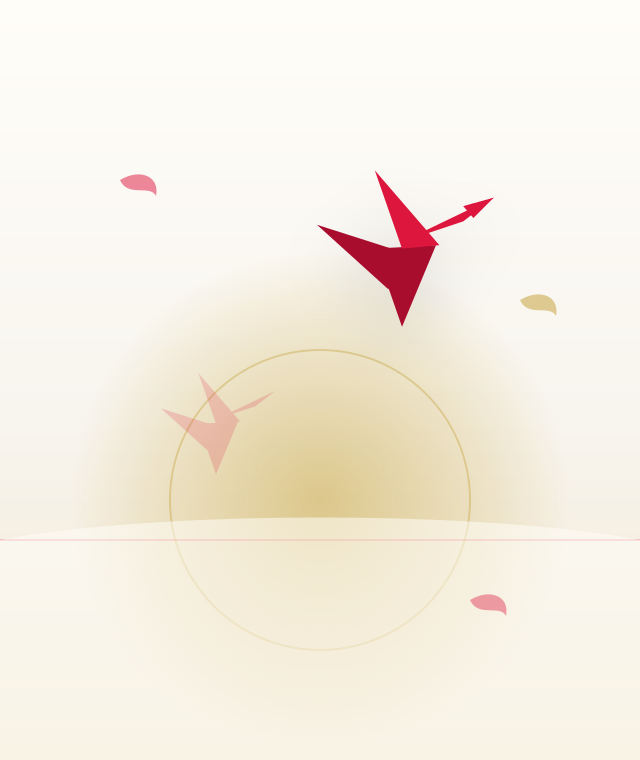

Untitled First Visual Novel Concept
A terminally ill transfer student dies alone and awakens one year before his death, carrying the memory of his final moments. What begins as a second chance slowly becomes a quiet confrontation with his own bitterness, loneliness, and the way he sees the world.
This will not be a story about simply escaping death or being saved by someone else. Along the way he meets people who carry their own pain, and each relationship asks something honest of him — there is no route that heals him by accident. It is a search for joy earned through hardship, even in the most fragile moments.
- StatusEarly Concept
- GenreEmotional Visual Novel
- EngineRen'Py planned
- ReleaseTBA
- FormatLong-term project
Themes we want to explore
Terminal illness
Second chance
Emotional growth
Loneliness
Human connection
Romance routes
Self-confrontation
Joy earned through hardship